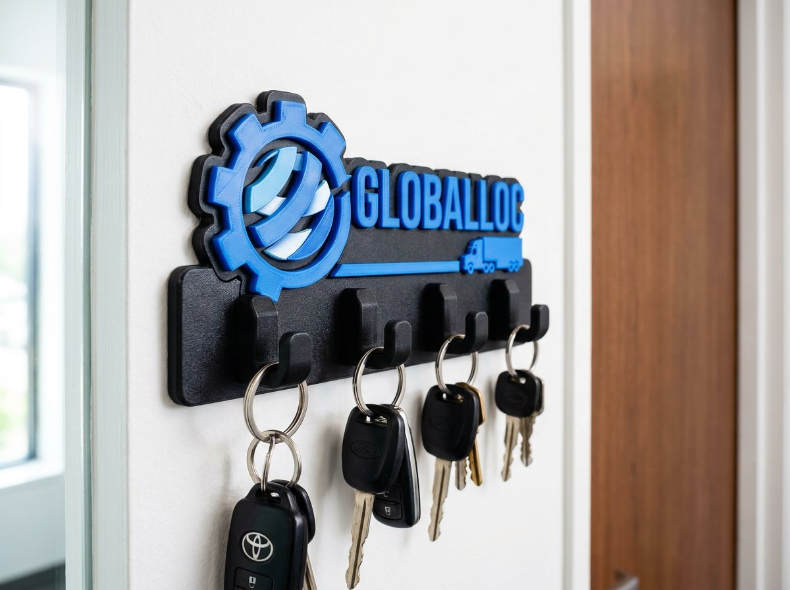
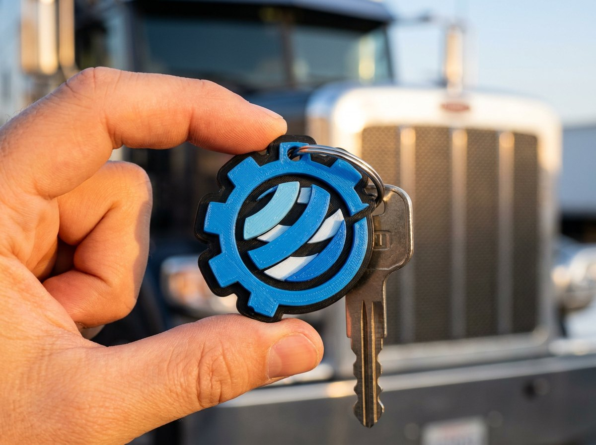
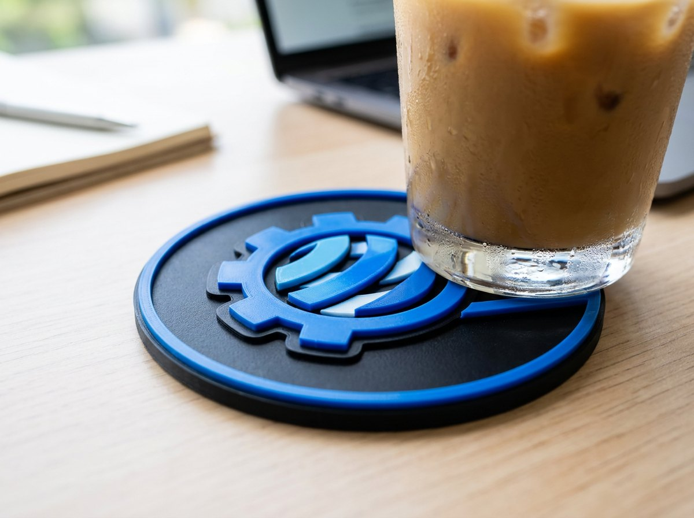

Porta-chaves de parede
Logo da GlobalLoc em relevo, nome e caminhão, com ganchos para as chaves da frota. Fixa na parede com parafusos ou fita dupla face.

Chaveiro engrenagem
A engrenagem da GlobalLoc em 4 cores (preto, azul, azul claro e branco), com argola de metal. Ótimo para entregar junto com a chave do veículo.

Porta-copos
Base redonda com borda azul e a logo no centro, em relevo. Combina com o porta-chaves para a recepção ou o escritório.
Em breve
Chaveiros volante e camiseta
Dois modelos de brinde com a logo: volante de caminhão e camiseta. A simulação será adicionada aqui.